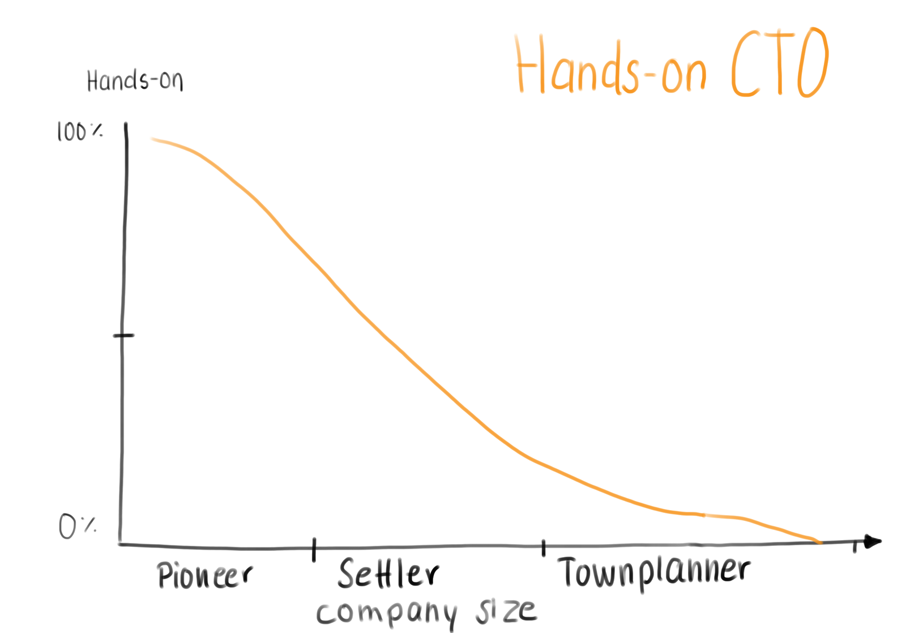

How hands-on should a CTO be?
I got asked on LinkedIn, so here is my answer.
It depends (on the phase of the company).
I like Simon Wardley’s Mapping. He defines categories of company phases
- Pioneers (searching for Product-Market Fit)
- Settlers (might have found Product-Market Fit)
- Town planners (Found something to grow)
A job in an early startup is very different from a big corporation. I also assume that while going through the phases, the company grows.
In a startup with ten people, you will code. If you have 20 people, I would argue the best thing you spend your time on is not coding. There will be more management tasks which need to get done. It will continue in this way as the company grows.

Going through these phases as a CTO (as any other C-Level) will change your daily job. It is hard to switch from Maker time to Management time back and forth and recognize which is needed. I struggle with it. I have a tech background, and it is always tempting to jump into coding and help the team out. Especially when we do have a lot of deadlines coming up and the team is giving everything. It feels so productive to get things done. But it might not be the best thing I can spend the time on.
As you grow, you build up a hierarchy, more teams, less and less coding. First you start not to write code but just read. At about 40 ish people, it might happen that you do not touch or look at the code anymore. Your mileage may vary.